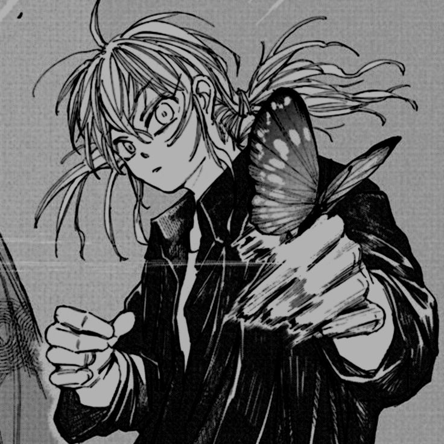
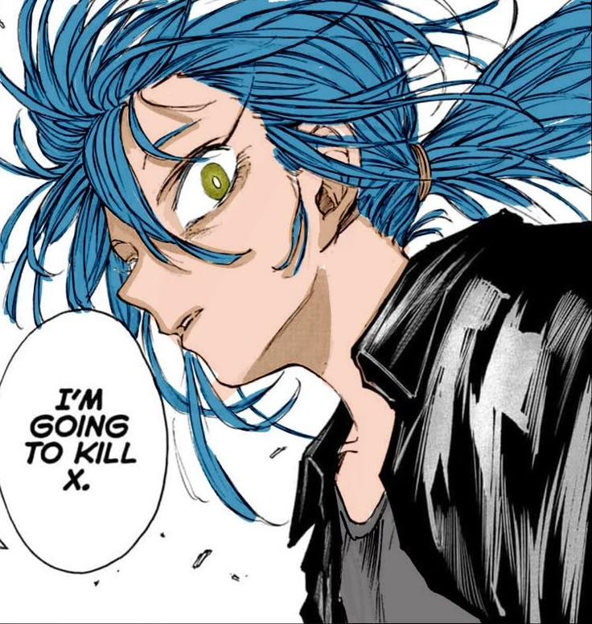
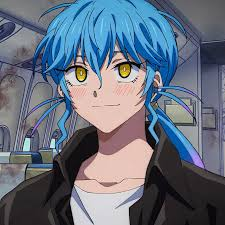
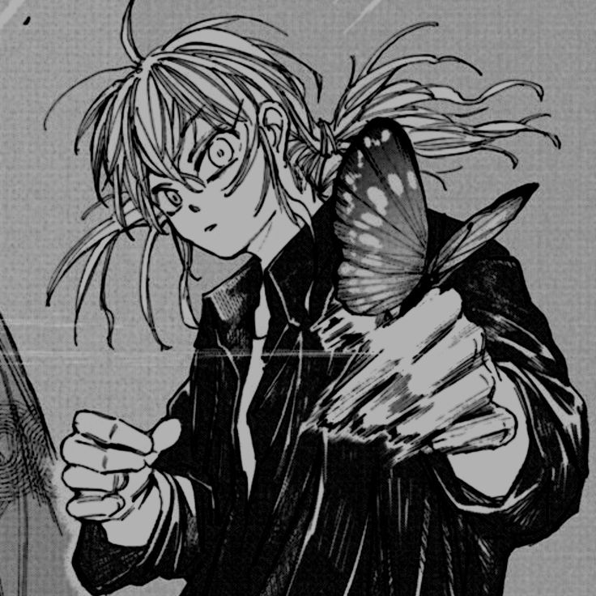
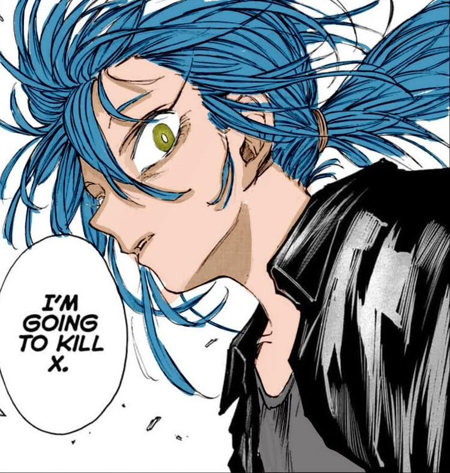
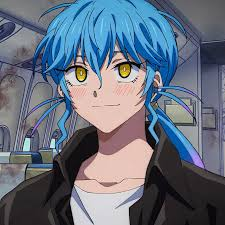

L'Histoire
Le Contexte
Nous sommes dans une ère où le football est devenu un sport mondial, le sport le plus populaire au monde ! Tout le monde connaît le football ainsi que son pouvoir à relier les gens dans l'amusement ou dans la rivalité !
Le Phénomène
Nous sommes au Japon quand un mystérieux phénomène se produisit… Le passé, le présent, le futur. Tout fut mélangé dans une seule et même époque…
Le Défi
Alors c'est à vous de jouer ! Jouez au Football, remportez le football frontiers avec votre équipe et vos amis et enquêtez sur ce mystérieux phénomène qui a rallié toute les époques !
Saison 1 - Chapitre 1
Suite à la cérémonie d'ouverture du tournoi football frontiers, le tournoi était donc ouvert avec 32 équipes divisés en 2 groupes de 4 poules de 4 équipes. Le but de chaque équipe ? Se hisser dans le top 2 de leur poule et prendre leur ticket pour les phases finales.
Le tournoi a commencé avec comme match d'ouverture, Alpin contre Kirkwood qui a directement posé des bases simples, ne jamais sous-estimer ses adversaires car le résultat était un match nul. Une véritable humiliation pour Alpin qui se croyait supérieurs.
Après ce match, plusieurs autres rencontres ont eu lieux avec matchs surprenants comme Raimon-Terria, des maths palpitants comme Zanark Domination-Seishou Gakuen et Universel-Eisei Gakuen.
En tout cas sachez que le sacre de la meilleure équipe du Japon s'approche à grand pas, donnez vous à fond avec vos coéquipiers pour avoir le saint-graal. Car après tout.
Votre Carrière ne fait que commencer…
 




